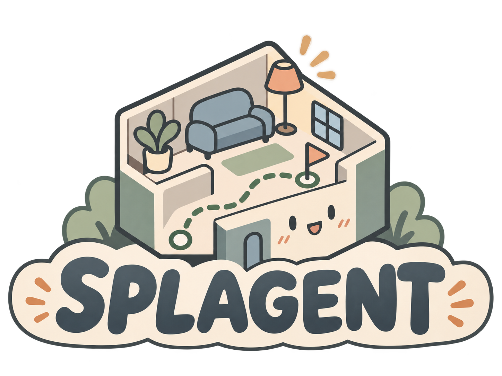
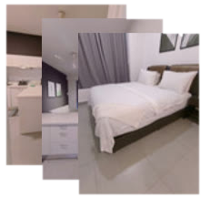
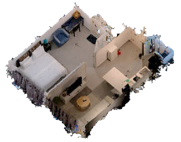
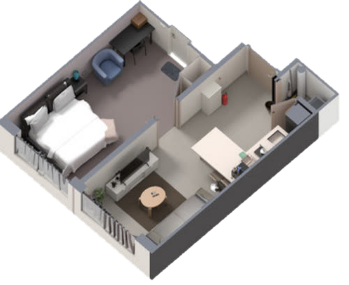
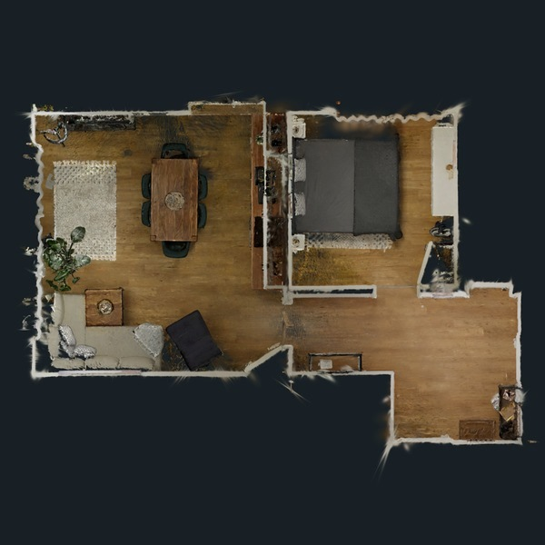
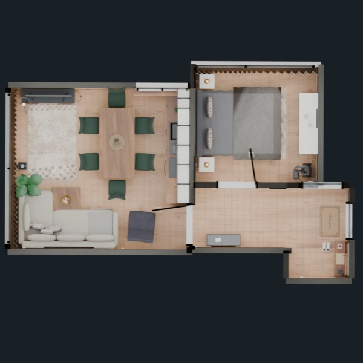
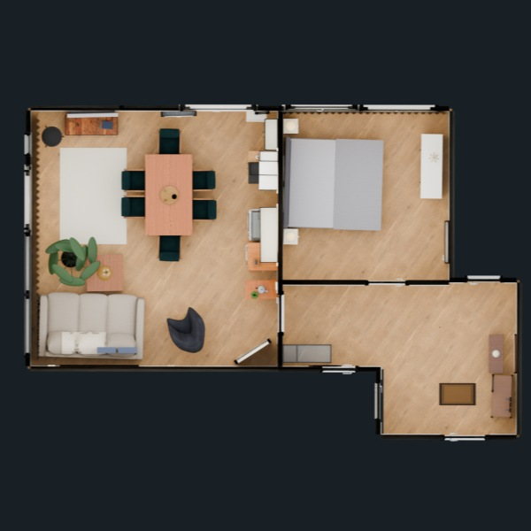
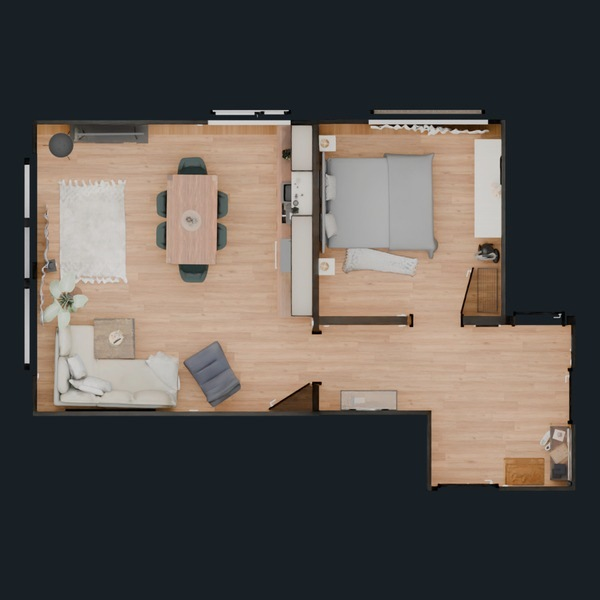

Splagent is a 3DGS-guided agentic framework that reconstructs indoor scenes as individually editable 3D assets, achieving more complete object recovery, particularly for small objects.
From posed images and a 3DGS scene to a compositional indoor scene made of individual objects.
Object-level reconstruction allows individual objects in an indoor scene to be edited and manipulated independently. Yet existing methods often miss objects that are visible in the input images, particularly small objects that appear in only a few views. We present Splagent, an agentic framework that uses a shared 3D Gaussian Splatting (3DGS) scene to reconstruct indoor environments as collections of compositional assets.
Its vision-language agents search calibrated images for objects, using full-resolution close-ups to help identify small instances. They use the scene geometry to associate detections across views and reconcile them with a scene-level layout inventory. The resulting inventory links each object to its supporting observations and a measured 3D bounding box, guiding procedural construction and mesh generation. When a generated asset fails verification against the source observations, the framework can revisit the same Gaussian scene to adjust its placement, remeasure its box, or render alternative views for regeneration.
On ScanNet++ and our captured indoor scenes, Splagent outperforms the evaluated multi-view baselines in both overall and small-object recovery. The full pipeline also produces more accurate reconstruction geometry. In transfer experiments, replacing native proposals with the measured inventory improves foreground reconstruction for some backends.



Orthographic top-down layouts of the same scenes: the input 3DGS, GPT-6 Astra, LiteReality-Agent, and ours.




Textured meshes exported from our final scenes. Drag to rotate, scroll to zoom. Each object is a separate asset.